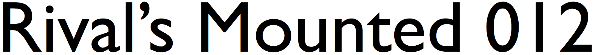
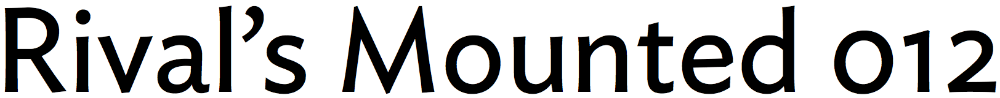
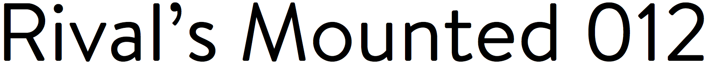
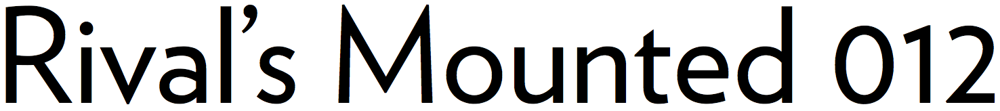

gill sans

ideal sans

brandon text

verlag

concourse
I complain about system fonts, but I won’t say a bad word about Gill Sans—it’s overexposed, but its unconventional details give it an enduring charm. Gill Sans lit the way for other sans serif fonts that combine geometric precision with looser hand-drawn features, like Ideal Sans, Brandon Text, and Verlag, which together prove that being geometric doesn’t mean being dull. (My own geometric sans serif, Concourse, also takes some cues from Gill Sans.)
Whatever the merits of Gill Sans, they do not extend to Eric Gill himself, who was indisputably monstrous. In his diaries, he meticulously documented years of rape and sexual abuse of two of his daughters. This material was largely whitewashed until Fiona MacCarthy’s 1989 biography.
The reckoning over Gill’s legacy continues, mostly in his native England, where he is well known. (Though Gill’s papers, including his diaries, have been archived at UCLA since shortly after his death in 1940.)
Among Gill’s output, Gill Sans stands apart because it arguably deserves to be credited to Gill’s mentor Edward Johnston, who designed the 1916 lettering for the London Underground that became the foundation of Gill Sans.